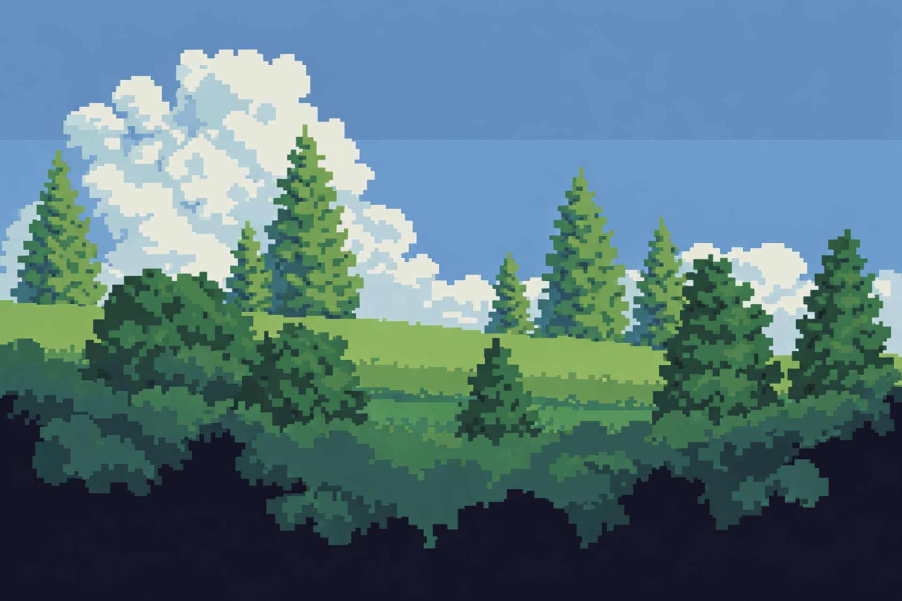
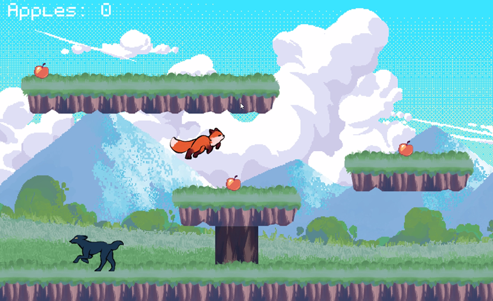
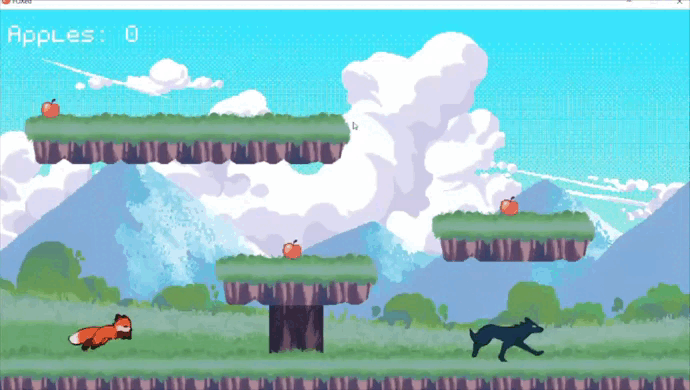
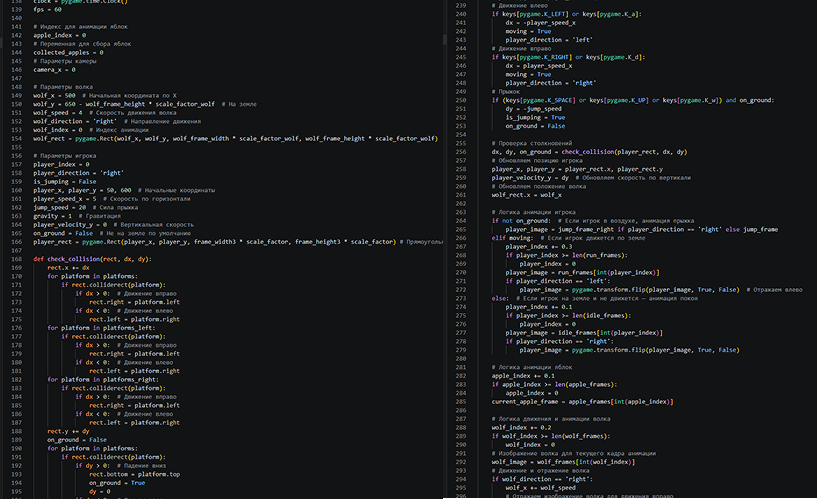
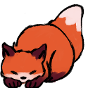

PLATFORMER
FOXED

The project was developed as a 2D platformer using HTML, CSS, and JavaScript web technologies. The technical aspects included the gameplay logic for character movement, the collision system, item collection, interactions with obstacles and enemies, as well as basic animation and screen transitions.
This is a story about one little fox, who became the last warrior and saviour of the world

About Project
In a quiet valley where the grass once shone like emerald silk, the apple trees were beginning to die. Their branches grew thin, their leaves turned pale, and the sweet scent of fruit was fading from the wind. The old animals whispered that only the Great Apple Tree, standing far beyond the hills and the dark forest, still carried the living apples that could save the valley. So one morning, a young fox cub with bright eyes and a brave heart left his home and set out alone, determined to reach the sacred tree before his homeland withered away completely.
The journey was not easy. Along the winding paths and broken cliffs, the little fox had to gather every apple he could find, for each one held a spark of strength and hope. But the forest was watched by hungry wolves, swift and silent, their shadows moving between the trees. The cub had to run, leap, and dodge through danger, trusting his quick paws and clever mind. Though fear followed him like a cold wind, he never turned back, because he carried the future of the valley in his small beating heart.
Development
The project was developed as a 2D platformer integrated into a portfolio website and implemented with HTML, CSS, and JavaScript. From a technical perspective, the work included building the core gameplay systems: player movement, jumping, combat interactions, collision detection, level logic, collectible items, and enemy avoidance mechanics. Particular attention was given to the structure of the codebase, with gameplay states, interface elements, navigation between pages, and visual components organized in a way that supports further development and simplifies future refinement.
In addition to the gameplay layer, the project also involved the implementation of screen transitions, interface navigation, responsive layout adjustments, and the integration of visual assets and animations into a unified interactive environment. Overall, the project was completed as a functional browser-based game module that combines technical implementation, visual presentation, and extensibility, making it suitable both as an interactive portfolio element and as a foundation for further feature development.

Development timeframe
04.01.23 - 12.01.23 / development and elaboration of the plot
15.01.23 - 27.01.23 / Creation of all necessary drawings and design development
27.01.23 - 23.02.23 / Working with PyCharm

